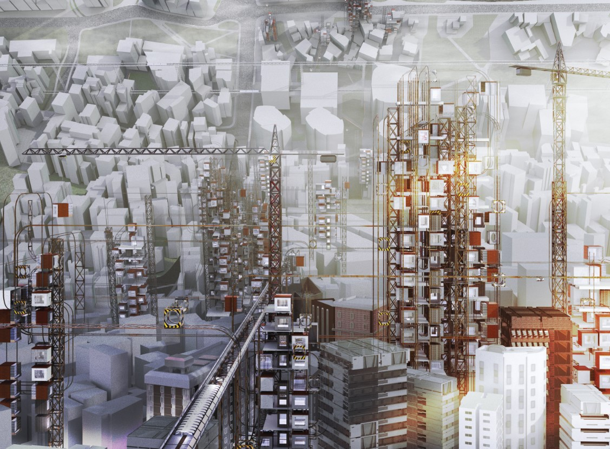

Augmented Intimacy
Design Competition: Home
Partners: Lin Hou, U Kei Long
2020
In a world where previous social experiments dealing with isolation
and human segregation are being tested in our communities, we are
brought into the stark realization that public has become a
non-renewable resource, and private our prison. Our response to
this dichotomy is to bring Virtual Reality into the Home Office
with different levels of Public and Private experience.
We define reality to be wholly mental, and the creations of the
virtual to be the real physicality. Within this new reality, our
modular Home Office can create a new social system in the city.
The Home Office is part of the Office Building or the Home.
The movable Rail Module Unit is a new Programming/Transportation
network that connects you to your friends, neighbors, and the city.
Home 2020 is not only design in the abstract, but is also an awakening
attitude towards an uncertain future. When global living
circumstances become more severe, how can we introduce Care
into our community. When the new housing system has been built, how
can we maintain a balance between the Old community and the New
system